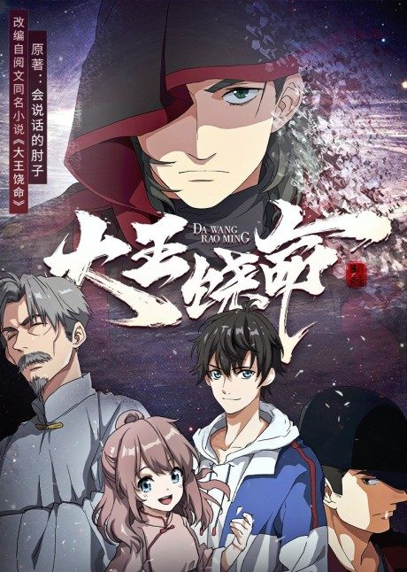

Taboo Tattoo
タブー・タトゥー
Seigi, a martial artist, helps a homeless man and receives a powerful tattoo.
After the anime, read the manga from Chapter 45.
5.3AniList score
—Animeter, no votes yet
12episodes
Rate it or report where you stopped
Is it worth pushing through?
Built from what visitors report across all 12 episodes.
Loading reports…Checking what other people said about this one.
Sign in above with your email to add your report.
More like Taboo Tattoo
 Manga Vol. 206.8
Manga Vol. 206.8
 Manga Ch. 1178.2
Manga Ch. 1178.2
 Manga Ch. 868.0
Manga Ch. 868.0
 Done8.1
Done8.1
 Manga Ch. 3408.9
Manga Ch. 3408.9
 Manga Ch. 1107.7
Manga Ch. 1107.7
 Film7.9
Film7.9
 Manga Ch. 1818.4
Manga Ch. 1818.4
 Manga Ch. 1136.9
Manga Ch. 1136.9
 Manga Ch. 577.6
Manga Ch. 577.6

Original7.3 Original7.3
Original7.3